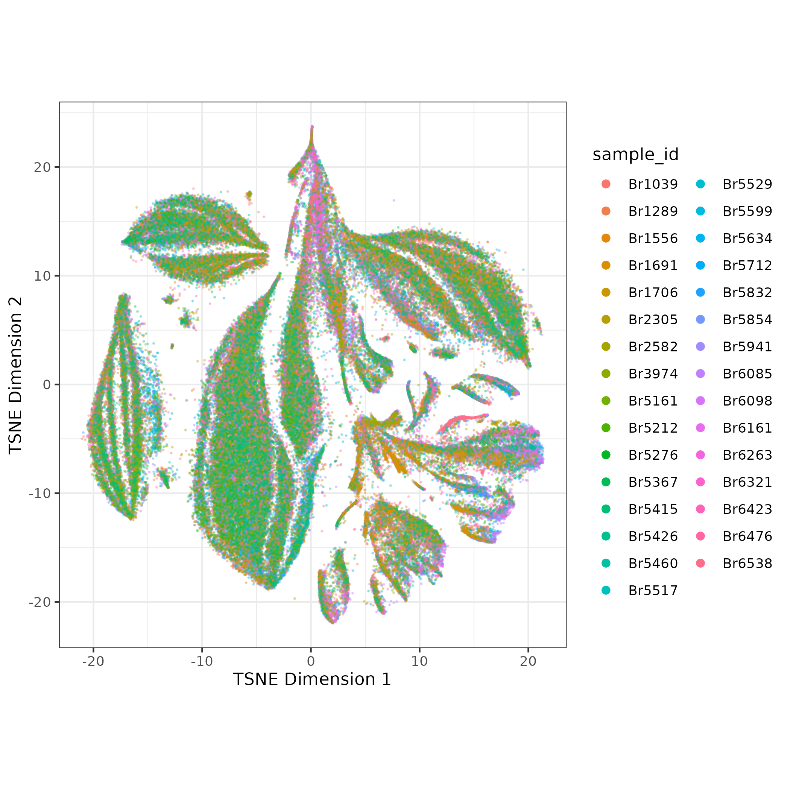
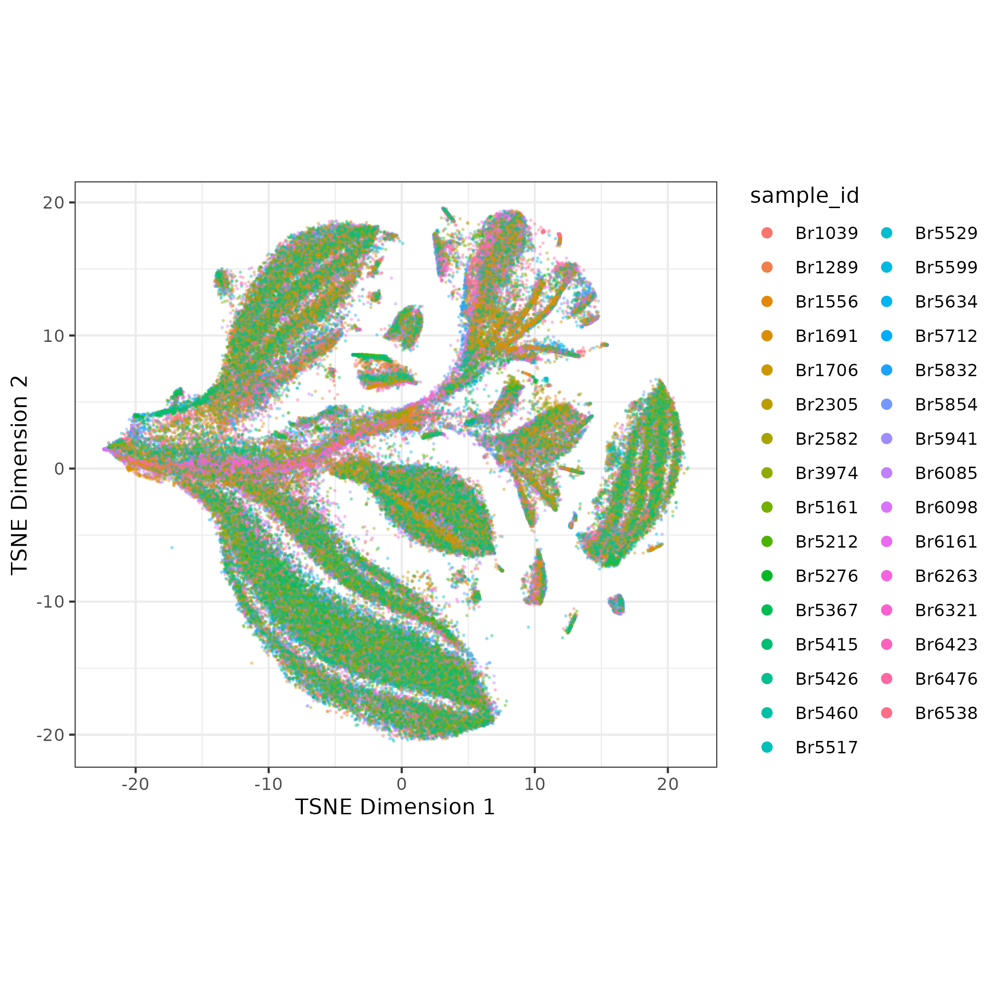
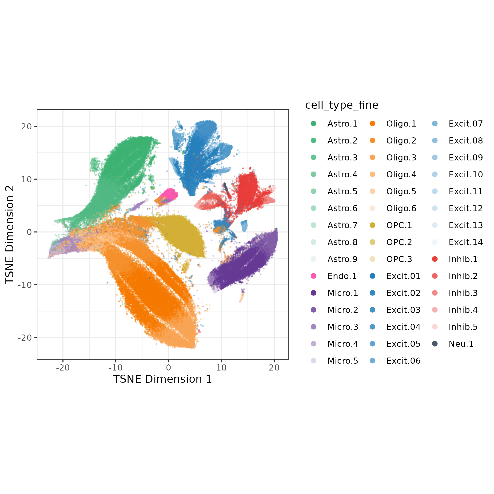
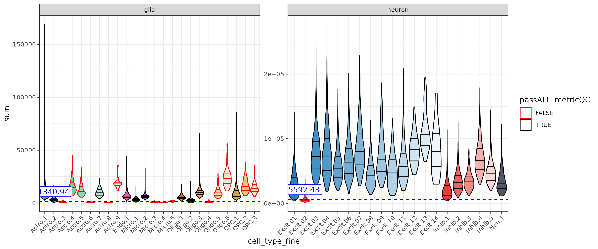
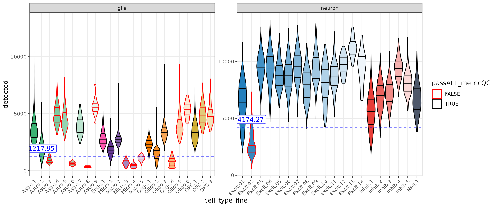
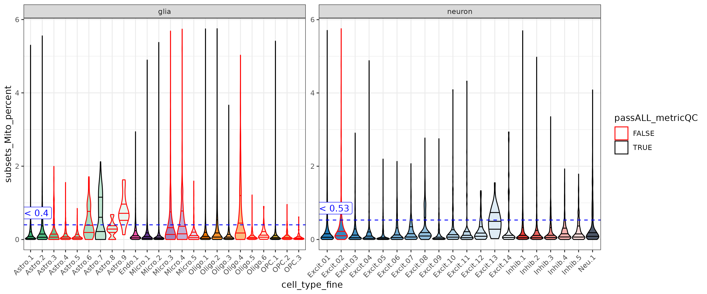
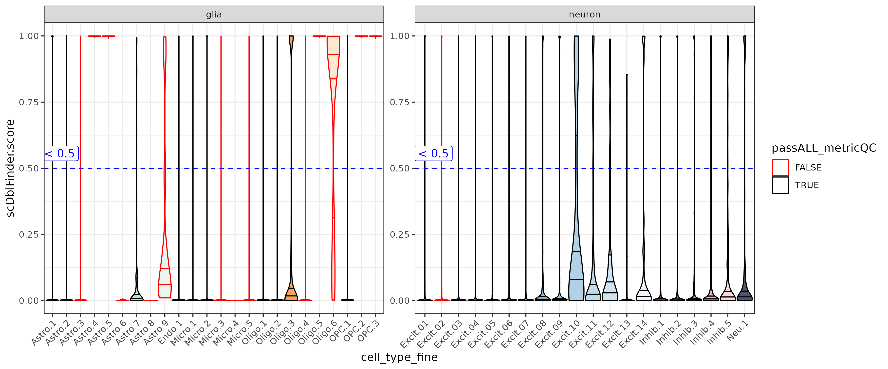
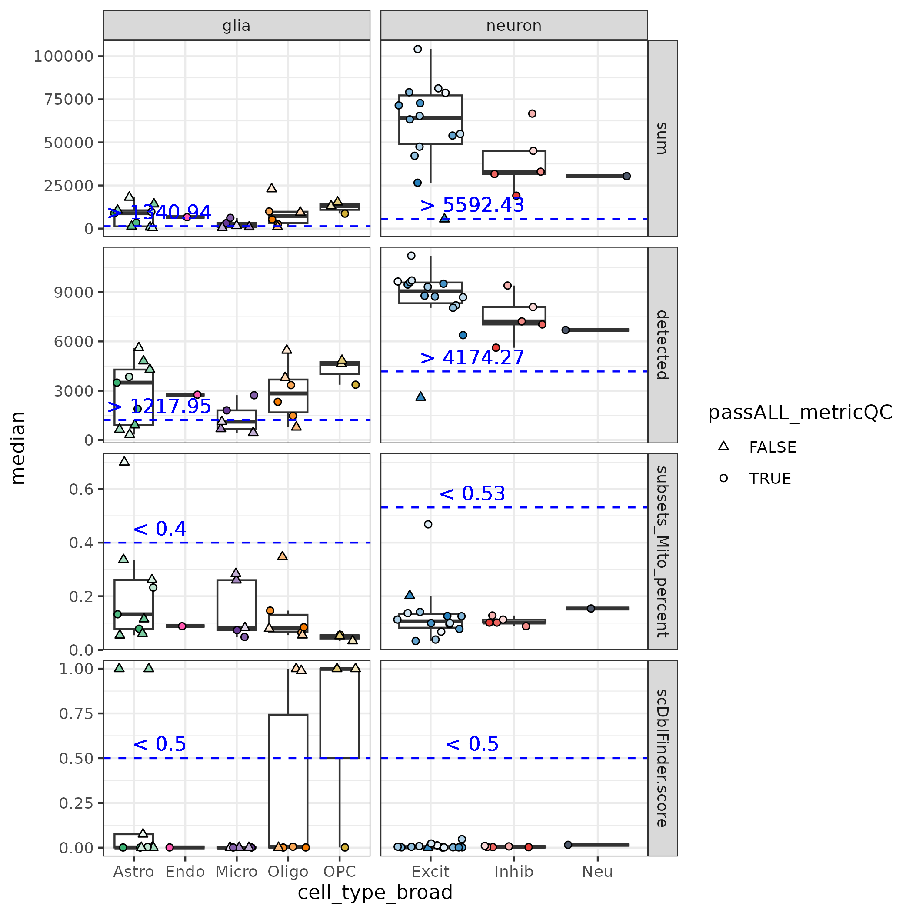

snRNA-seq Guide: cluster QC
A guide for LIBD snRNA-seq processing
Introduction
The goal of cluster quality control (QC) is to further identify low quality nuclei by running a preliminary clustering step, then dropping clusters with poor QC scores (high mitochondrial rate, high doublet score, low sum UMI, or low detected genes). After cluster QC, the data is re-clustered with the aim that the second ‘optimal’ clustering is then driven by cell type identity not quality signal.
Get Ready:
1. Nuclei QC
Cluster QC is run after ‘nuclei’ QC where droplets/nuclei are quality controlled in the following process:
- Evaluate each droplet for if it contains nuclei or only ambinet RNA (an ‘empty droplet’) with
DropletUtils::emptyDrops(), DROP empty droplets, KEEP droplets containing nuclei - Calculate the double score for each nuclei with
scDblFinder::scDblFinder()(see scDBLFinder docs), but don’t drop yet - we’ll evaluate this in the cluster QC step - Nuclei are evaluated by sample for high mitochondrial rate, low sum UMI, or low detected genes with
scuttle::isOutlier(), DROP nuclei that are over cutoff for any metrics, KEEP nuclei that pass all metrics- It may be reasonable to set a hard cutoff for mitochondrial rate - we’ll discuss more
After nuclei QC, you’ll retain high QC nuclei with double scores, ready for clustering! But notably when evaluating brain snRNA-seq data, neurons have high levels of transcriptional activity than glia leading to different distributions of these QC metrics. This is visible in the bi-modal distributions of the nuclei sum UMI QC plots. Some of the nuclei that look fine might be low quality neurons, but we don’t know which neurons are neurons yet 🕵️! To understand what type of cells these nuclei are we’ll have to cluster.

2. Feature Selection, Dimension Reduction, and Batch Correction
To cluster the nuclei we’ll need batch-corrected principal components (PCs). We won’t get in to too much detail here but our current method is GLM-PCA but quickly:
- Select top 2k genes (features) deviating from binomial model
scry::devianceFeatureSelection()then calculate deviance residuals withscry::nullResiduals() - Reduce dimensions with PCA, calculate UMAP and TSNE for visualization

- Run batch correction with Harmony- the batch correction is subtle in this example

We will use the batch-corrected PCAs for clustering.
Cluster Quality Control
1. Preliminary Clustering
The next step is to cluster the nuclei. There are many ways to optimize clustering, but to keep things simple, I recommend using a finer cluster resolution (for more but smaller clusters), but still a manageable number (~50 clusters).
Previously we’ve used single-nearest-neighbors + walktrap clustering. For larger data we’ve started using Leiden clustering, possible starting parameters to use there are k=25, resolution = 0.3.
I used SSN with k=10, then walktrap on the ERC data (140k nuclei after QC) resulting in 44 clusters:
## running single-nearest-neighbors k =10
snn.gr <- bluster::buildSNNGraph(sce, k = k, use.dimred = "HARMONY")
## Run walk trap clustering
clusters <- igraph::cluster_walktrap(snn.gr)$membership
table(clusters)
# clusters
# 1 2 3 4 5 6 7 8 9 10 11 12 13
# 7364 1309 2884 2949 10363 13986 1909 809 596 160 919 15594 694
# 14 15 16 17 18 19 20 21 22 23 24 25 26
# 770 839 1672 2243 8680 8484 13680 216 4745 8787 39 420 3117
# 27 28 29 30 31 32 33 34 35 36 37 38 39
# 341 396 459 668 22929 774 325 137 197 44 139 41 67
# 40 41 42 43 44
# 73 84 25 178 14 2. Annotate Clusters by Cell Type
Next we want a preliminary cell type annotation for each cluster. Cell type annotation can be tricky and time consuming, especially on low quality clusters. Here we just want to focus on classifying nuclei clusters as neurons or glia (cell_type_class).
Clusters can be classified by expression of cell type marker genes, but even at the class or broad cell cell type level that can be time consuming!
To help with this process I’ve used the automated cell type identification tool ScType. I had to make some adaptions to run with SingleCellExperiment data, see my code here.
ScType scores each cluster based on expression of marker genes from a tissue-specific database (we’ll use brain). From the scores it provides a cell type classification and a measure of confidence for its classification. I used these classifications to annotate each cluster cell_type_broad and cell_type_class.
| type | cell_type_broad | cell_type_class |
|---|---|---|
| Astrocytes | Astro | glia |
| Endothelial cells | Endo | glia |
| Microglial cells | Micro | glia |
| Oligodendrocytes | Oligo | glia |
| Oligodendrocyte precursor cells | OPC | glia |
| Glutamatergic neurons | Excit | neuron |
| GABAergic neurons | Inhib | neuron |
| Mature neurons | Neu | neuron |
I also assigned cell_type_fine as a combination of cell_type_broad and rank of number of nuclei within a cell type (so the Astrocyte cluster with most nuclei is Astro.1). Now I have a name and cell type annotation for all 44 clusters! ✅

3. Check Quality Metrics of Clusters
We will now evaluate clusters based on high mitochondrial rate, low sum UMI, or low detected genes (like in nuclei QC), and now we’ll evaluate scDblFinder score by cluster.
For each metric the cluster’s median QC score is compared to a cell class specific cutoff (calculated below). If the median score is below the cutoff for sum UMI or low detected genes OR above the cutoff for mitochondrial rate or doublet score the cluster will fail quality control. Often poor quality clusters will fail more than one QC evaluation.
Sum UMI & Detected Genes
These metrics have different ranges between gila and neurons. With the adjusted cutoffs low quality neurons (ex. Excit.2) can be detected with out loosing too many glia.


Mitochondrial Gene Expression
Mitochondrial rate was low for the ERC data, and just a bit higher in neurons. For other data sets a stricter cutoff may need to be set, but more discussion is needed.

Doublet Score
In the ERC data the scDblFInderScore was close to 0 or 1. Doublet clusters can look fine in other metrics but have super high doublet scores (ex. Astro.4 & Astro.5)

Calculate QC Cutoffs
For the first three metrics we’ll determine a cutoff for neurons and glia separately, by grouping the nuclei by cell_type_class then calculating the median value, the median absolute deviation (MAD), and a cutoff based on those values. Below are the values from the ERC snRNA-seq data. The multipliers may need to be adjusted based on the data set.
For sum UMI and detected, we want to keep clusters with high values (drop low), so we’ll set the cutoff to be
median - 1*MADFor mitochondrial rate we want to keep clusters with low values (drop high), so so we’ll set the cutoff to be
median + 3*MAD.For
scDblFInderScorewe’ll use a consistent cutoff of >0.05.
| cell_type_class | metric | median | mad | cutoff | cutoff_anno |
|---|---|---|---|---|---|
| glia | detected | 2321.00 | 1103.05 | 1217.95 | > 1217.95 |
| glia | subsets_Mito_percent | 0.09 | 0.10 | 0.40 | < 0.4 |
| glia | sum | 4957.00 | 3616.06 | 1340.94 | > 1340.94 |
| neuron | detected | 6711.00 | 2536.73 | 4174.27 | > 4174.27 |
| neuron | subsets_Mito_percent | 0.12 | 0.14 | 0.53 | < 0.53 |
| neuron | sum | 28592.00 | 22999.57 | 5592.43 | > 5592.43 |
Here is another look at the cluster median QC values vs. these cutoffs.
